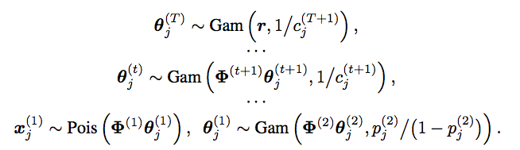

I am an assistant professor of statistics at The University of Texas at Austin. I am with the Department of Information, Risk, and Operations Management (IROM) at the McCombs School of Business. I am also a core faculty member in the Department of Statistics and Data Sciences at the College of Natural Sciences.
I received my Ph.D. from Duke University in 2013, Master's from the Chinese Academy of Sciences in 2008, and B.Sc. from Nanjing University in 2005. My Ph.D. advisor was Lawrence Carin.
My research lies at the intersection of Bayesian statistics and machine learning. I am interested in developing statistical theory and methods, hierarchical models, and efficient Bayesian inference for big data. I am currently focused on the development of nonparametric Bayesian hierarchical models for count data analysis, mixture modeling (clustering, mixed-membership modeling, topic modeling), dictionary learning (feature learning, factor analysis), network modeling, and multilayer deep representation.
Duke-Tsinghua Machine Learning Summer School
I am giving an invited lecture in Duke-Tsinghua Machine Learning Summer, which will be held from August 1 to 10 in Duke Kunshan University, Kunshan, China. Kunshan is a city of Jiangsu Province that is close to both Shanghai ans Suzhou. Registration is now open: https://dukekunshan.edu.cn/en/events/machine-learning-2016.
Research Highlights:
- Our NIPS2015 paper "The Poisson gamma belief network" presents a Poisson-gamma-gamma-gamma... generative model that can be used to unsupervisedly extract multilayer deep representation of high-dimensional count vectors, with the network structure automatically inferred from the data given a fixed budget on the width of the first layer. When applied to deep topic models, the Poisson gamma belief network (PGBN) extracts very specific topics at the first hidden layer and increasingly more general topics at deeper hidden layers. Jointly training all the layers is simple and the code is easy to implement, as a PGBN of T layers can be broken into T subproblems that are solved with the same subroutine, with the computation mainly spent on training the first hidden layer. The extracted deep network can also be used to simulate very interpretable synthetic documents, which reflect various general aspects of the corpus that the network is trained on.
- The paper "Priors for random count matrices derived from a family of negative binomial processes" is accepted for publication in Journal of the American Statistical Association.
- Two papers are accepted for publication in AISTATS 2015:
- Infinite edge partition models for overlapping community detection and link prediction.
- Nonparametric Bayesian factor analysis for dynamic count matrices.
- My NIPS2014 paper "Beta-negative binomial process and exchangeable random partitions for mixed-membership modeling" introduces a nonparametric Bayesian prior to describes how to partition a count vector into a latent column-exchangeable random count matrix, whose number of nonzero columns is random and whose each row sums to a fixed integer. Note that in topic modeling, one is essentially trying to partition a count vector, each element of which is the total length of a document, into a Document by Topic latent count matrix. A fully collapsed Gibbs sampling algorithm naturally arises from the latent count matrix prior governed by the beta-negative binomial process.
- The paper "Sample size dependent species models" that I co-authored with Dr. Stephen Walker introduces the concept of a cluster structure to define a joint distribution of the sample size and its exchangeable random partitions. The cluster structure allows the probability distribution of the random partitions of a subset of the sample to be dependent on the sample size, a feature not permitted by Kingman's partition structure. This paper is motivated by the fundamental problem of measuring species diversity using a random sample from the population. The model has been successfully applied to the analysis of sequencing count data. Below is an interesting picture from this paper:
- The paper "Priors for random count matrices derived from a family of negative binomial processes" that I co-authored with O.-H. Madrid-Padilla and James Scott defines a family of probability distributions to generate infinite random count matrices, whose columns are independent, and identically distributed (i.i.d.). A random count matrix, with a Poisson distributed and potentially unbounded random number of columns, can be generated by either drawing all its i.i.d. columns at once or adding one row at a time. Both the gamma- and beta-negative binomial process random count matrices can model row-heterogeneity with row-wise parameters, whose conditional posteriors have closed-form expressions. The left (right) picture below shows a gamma (beta) negative binomial process random count matrix, whose rows are added one by one, with the new columns introduced by each row appended to the right of the matrix. Our models lead to nonparametric naive Bayes classifiers that do NOT need to predetermine a finite number of features that are shared across all the categories.
- The paper "Negative binomial process count and mixture Modeling" that I co-authored with Dr. Larry Carin will appear in IEEE Trans. Pattern Analysis and Machine Intelligence: Special Issue on Bayesian Nonparametrics. The picture below describes a useful bivariate count distribution discovered in the paper.



© May 2016 Mingyuan Zhou